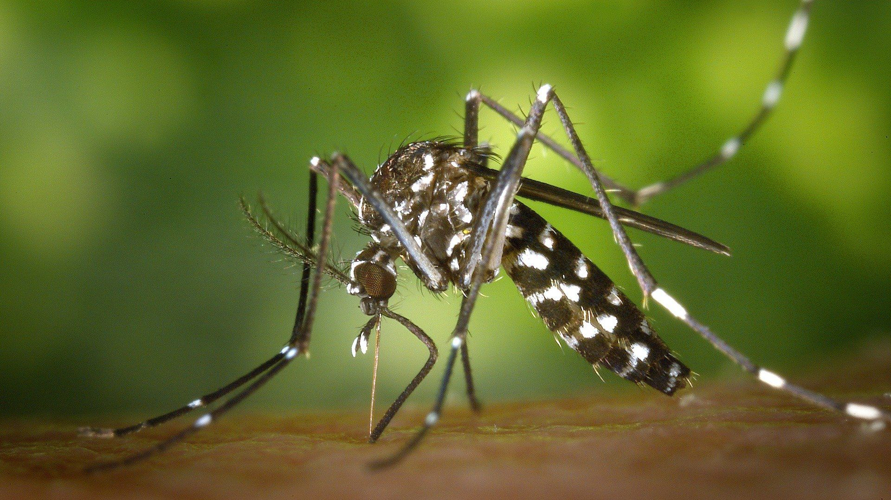

Juntos podemos combater a dengue!
A dengue é uma doença viral transmitida pelo mosquito Aedes aegypti. Ela pode causar sintomas como febre alta, dores musculares, dores de cabeça e manchas vermelhas pelo corpo. Existem quatro sorotipos do vírus da dengue (DEN-1, DEN-2, DEN-3 e DEN-4), e a infecção por um sorotipo não oferece imunidade contra os outros.
Certifique-se de que as caixas d'água estão bem tampadas para evitar que o mosquito Aedes aegypti deposite seus ovos.
Retire ou preencha pratinhos de plantas para evitar o acúmulo de água parada.
Descarte corretamente pneus, garrafas e outros recipientes que possam acumular água.
Certifique-se de que as lixeiras estejam sempre fechadas para impedir a proliferação do mosquito.
Remova folhas e sujeiras que possam acumular água nas calhas e telhados.
Trate a água das piscinas com produtos apropriados e mantenha-as sempre limpas.
Febre alta e súbita, geralmente acima de 38.5°C, acompanhada de dor de cabeça intensa.
Dores severas nos músculos e articulações, às vezes referida como "febre quebra-ossos".
Dores de cabeça fortes, especialmente atrás dos olhos, que pioram com o movimento ocular.
Erupções cutâneas vermelhas que podem surgir no tórax, braços, pernas e rosto.
Sensação de náusea, vômitos frequentes e desconforto abdominal.
Sensação extrema de cansaço, fraqueza e falta de energia.
Beber bastante líquido para evitar a desidratação e descansar adequadamente.
Uso de medicamentos para alívio da dor e febre, conforme orientação médica.
Procurar atendimento médico imediatamente em caso de sintomas graves, como sangramentos, dor abdominal intensa e vômitos persistentes.